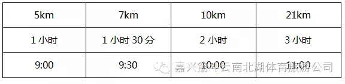

跟奥运冠军跑起来
健康中国·南北湖半程马拉松
开始报名了！
与奥运冠军近距离接触
感受冠军气场
学习冠军品质
努力奋斗
勇攀人生高峰
2016 跟奥运冠军跑起来——健康中国·南北湖半程马拉松将于10月30日在浙江省嘉兴市海盐县南北湖东大门举行，设有男、女半程组，男、女迷你组（7km），家庭亲子组（3.8km）和团体半程组4个组别。在秋意盎然的10月30日，在诗情画意的南北湖畔，在奥运冠军的陪同下，让我们一起奔跑吧！另有10万元奖金等你来拿！奖金丰厚、奖品优质！心动不如行动！
现已开放报名，具体信息如下——
跟奥运冠军跑起来
健康中国·南北湖半程马拉松
开始报名了！
与奥运冠军近距离接触
感受冠军气场
学习冠军品质
努力奋斗
勇攀人生高峰
比赛时间：2016年10月30日（星期日）上午7:00
比赛地点：中国·海盐南北湖东大门
竞赛项目：（一）参与者年龄要求：
1.半程组、团体组需满18周岁（1998年10月30日前出生）；
2.迷你组需满16周岁（2000年10月30日前出生）；
3.家庭亲子组最小参与者需满6周岁（2010年10月30日前出生）；
签到当天请携带本人身份证等有效证件，需代签者提供身份证原件。
（二）参与者健康要求：马拉松是一项高负荷大强度长距离的竞技运动，也是一项高风险的竞技项目，对参赛者身体状况有较高的要求，参赛者应身体健康，有长期参加跑步锻炼或训练的基础。参赛者可根据自己的身体状况和实际能力参加半程马拉松、迷你马拉松、亲子跑项目其中的一个项目报名参赛。有以下疾病患者不宜参加比赛:
1.先天性心脏病和风湿性心脏病患者;
2.高血压和脑血管疾病患者;
3.心肌炎和其他心脏病患者;
4.冠状动脉病患者和严重心律不齐者;
5.血糖过高或过低的糖尿病患者;
6.两周内发热感冒者；
7.其它不适合运动的疾病患者。
注：组委会要求每位参赛选手在赛前要到县级以上医院进行一次身体检查，检查结论为身体健康者方能参加比赛。如检查单显示出身体有问题或是不宜参加长跑活动等结论者不能参加比赛。在比赛中，因个人身体及其他个人原因导致的人身损害和财产损失，由参赛者个人承担责任。
报名时间：2016年9月12日-10月8日
报名须填写所有报名信息，报名费支付成功后，即报名成功，报名成功后因参赛选手原因未能参加比赛不退报名费。待报名工作截止后，参赛者可电询组委会查询参赛号码。凭本人身份证等有效证件及被代签人身份证原件，赛前领取参赛物品，赛事包一经领取责任自负。
报名收费：
半程组：150元/人 、
迷你组：100元/人 、
家庭亲子组：180元/组 、
团体组：130元/人，10人/组
（一）比赛按中国田径协会审定的最新田径竞赛规则和本届马拉松赛的竞赛规程执行。
（二）所有参赛选手必须在2016年10月30日上午7：30之前到起点，按竞赛项目在规定区域内分别进行排队集结。8：00准时鸣枪起跑。
（三）关门距离和时间：为了保证参赛选手比赛安全、顺利，比赛期间比赛路线各段设关门时间，限时对社会交通封闭。关门时间后，相应路段恢复社会交通。参赛选手未在规定的关门时间内，未跑完对应距离者须立即停止比赛，退出赛道，以免发生危险。退出比赛的选手可乘坐组委会提供的收容车到终点处。关门时间后仍停留在赛道的选手，所发生一切后果由本人承担。
关门时间和距离：（以枪声的出发时间为准）家庭亲子组需在活动结束时间（11:00）前到达终点即可
（四）有关竞赛的其它具体要求和安排，请查阅赛前颁发的《参赛指南》（在赛前领取竞赛物品时发放）
（五）组委会将对起点、全程路线和终点进行监控，出现以下违反比赛规定的参赛选手将被取消参赛成绩，两年内不准许参加中国·海盐南北湖半程马拉松赛，报名费亦将不退还：1.虚假年龄报名或报名后由其他人员代跑；2.不按规定的起跑顺序在非报名项目的起跑点起跑；3.起点活动中不按规定时间出发抢跑；4.关门时间到后不停止比赛或退出比赛后又插入赛道；5.没有沿规定路线跑完半程，绕近道或乘交通工具途中插入；6.在终点不按规定要求重复通过终点领取纪念品；7.未跑完全程私自通过终点领取纪念品；8.不服从赛事工作人员指挥，干扰赛事，聚众闹事的；9.其他违反规则行为规定的。
（六）团体组10人/组，团体成绩按照组内完赛成绩的前八名成绩相加，用时最少的团队优胜；凡报名团体组的参赛者，个人成绩除计入团体成绩之外，也可计入半程组成绩进行排名。
（七）亲子组2-3人每组，按照组内全员到达时间排列成绩。
1、凡参加半程组、团体组比赛者赛前均发参赛服、赛事包、号码布、计时芯片以及《跟奥运冠军跑起来——健康中国·南北湖半程马拉松参赛指南》；
2、凡参加迷你组、亲子组比赛者赛前均发参赛服、号码布、计时芯片以及《跟奥运冠军跑起来——健康中国·南北湖半程马拉松参赛指南》；
3.完赛奖励：凡参与并完赛者可获得完赛纪念奖牌、纪念证书；
4.半程组完赛者成绩前二十名将获得直通2017年跟奥运冠军跑起来——健康中国·南北湖半程马拉松免报名费名额
医疗救护：
1.赛道沿途设有固定医疗点和救护车。
2.赛道沿途处设置若干志愿者，协助医疗救护、维护比赛秩序，参赛者有问题可以向他们请求帮助。
保险:
参赛选手保险自理，如需委托组委会办理意外伤害保险的参赛选手，每位需缴纳人民币20元（请在报名表“委托保险”栏内打“√”）。
赛道其他设置：
组委会将每3公里设置一个饮水补给点，由工作人员、医护人员驻守，除运动员外任何无关人等不得靠近饮水补给点，保证饮水安全。
建议入住酒店：
1.湖光山居度假酒店 0573-86517777
2.南北湖新碧波影星假日酒店 0573-86516111
3.金牛山庄 0573-86566777
4.南北湖湾景宾馆 0573-86516222
5.新飏山酒家 0573-86511062
6.桃源山庄 0573-86566001
7.月亮城堡 0573-86566001
所有酒店请自行预订，因恰逢南北湖文化旅游节期间，建议尽早预订，以免耽误行程。也可网上预订，登录携程网、去哪儿网，搜索南北湖景区酒店，更多酒店信息可自行查询。
相关咨询咨询时间：工作日9:00-17:00
咨询地点：海盐县体育中心（海盐县新桥北路199号）、海盐县长跑协会（海盐县新桥北路199号）、嘉兴筋斗云南北湖体育旅游开发有限公司（南北湖景区东大门南）
联系电话：
0573-86515690 组委会
0573-86515691 组委会
13754320756 吴雅倩
18368313682 梁亚楠